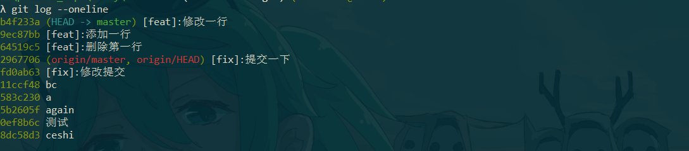
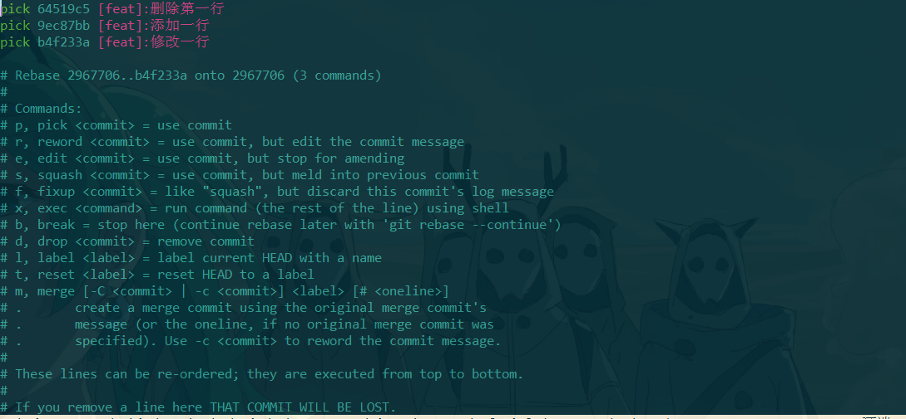
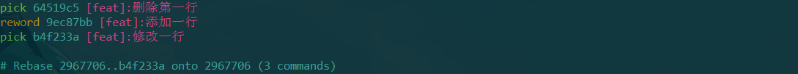
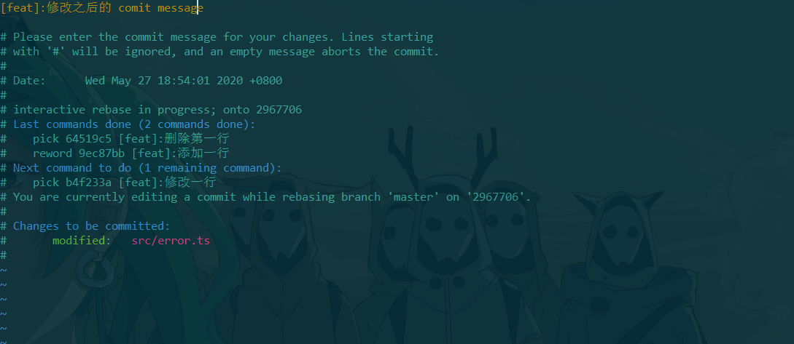
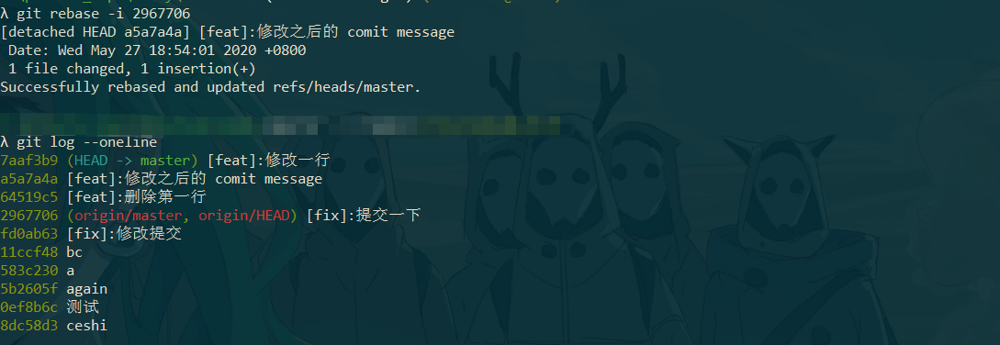
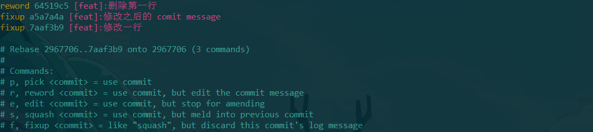
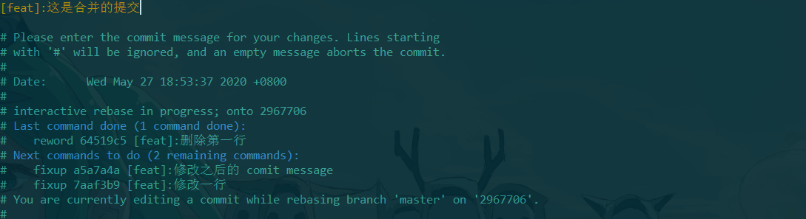
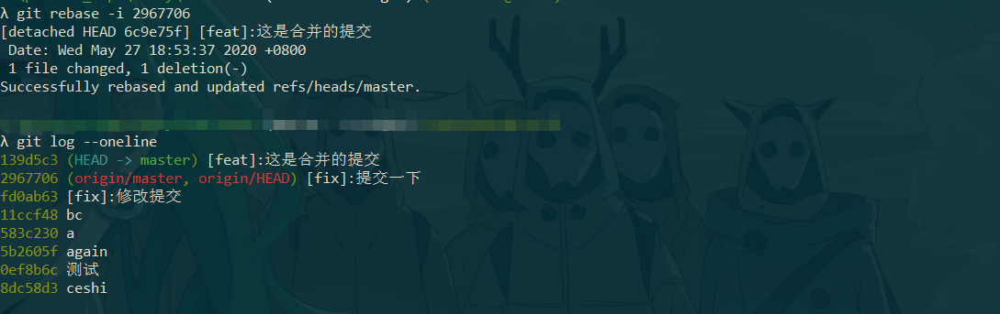

针对 commit 提交中的问题 & 解决方案做一些记录。
- 想要合并本地的多次
commit提交。 - 有几次的
commit message写的有问题，想要进行修改。
修改 commit message
修改本地最新一次提交的 commit message
可以使用
1 | git commit --amend |
来针对最新一次本地的 commit message 做修改。
默认会打开编辑器界面，有可能是 nano，可以使用：
1 | git config --global core.editor vim |
设置默认的编辑器为 vim。
修改本地其中某一次的 commit message
假如我们本地的提交记录是

可以看到 local 相对于 origin 有三个提交没有 push。
可以使用
1 | git rebase -i 2967706 |
2967706 这个 commit id 是本地分支记录里远程分支的最新一次提交的 commit id ，这是一个合并 commit 的操作，会把我们本地还未 push 的 commit 都包含进来，可以用这个操作修改其中某次的 commit message。
执行 git rebase -i 2967706 命令后，我们可以针对未提交的 commit meaasge 做修改。

然后把 9ec87bb 前面的 pick 改成 reword 或者 r
r, reword
= use commit, but edit the commit message

列出的 commit 记录是最新的在最下面。然后会弹出 vim 编辑界面，改完之后保存并退出。

然后就会变成

发现我们修改的那次提交的 commit id 和它之后提交的记录的 commit id 都变了。
合并 commit 提交记录
拿上面修改的 commit 做一次合并提交，把本地的三次提交合并到一次提交。
使用
1 | git rebase -i 2967706 |
弹出编辑界面，保存并退出。

回车之后又出现编辑界面，因为我改了最新的一次提交由 pick 改成了 record 。

终端输出

然后提交修改
1 | git push origin master |
It’s Done
已经
push到远程的commit记录，还是不建议改了。强行改其他协同的人要哭了。